abraar@root:~/assignments/nagorik$ cat README
Tin Shotti (তিন সত্যি): a child mode for the parent's phone
My submission for the Junior Product Manager assessment at Nagorik Technologies Ltd. (November 2026). The brief: a child digital-safety MVP for families in Bangladesh with children aged 3–14, one developer with an AI coding platform, six weeks. The two-page PDF is the answer; everything below is optional background on how I got there.
## the answer (PDF, 2 pages)
## working notes

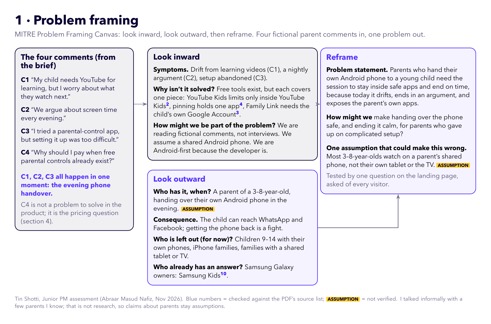

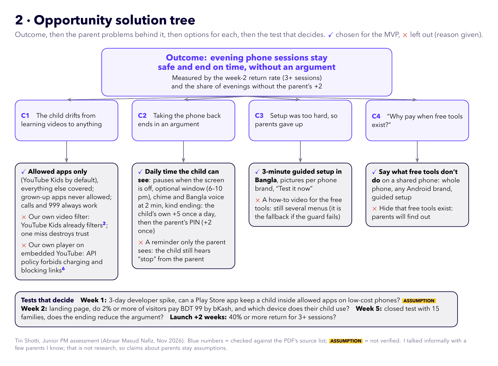

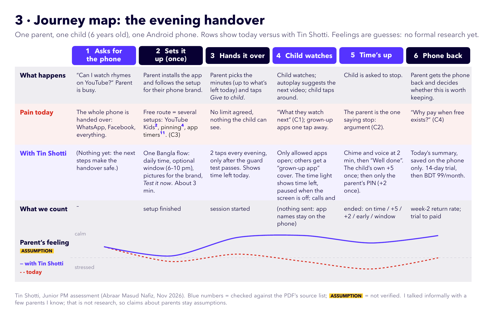

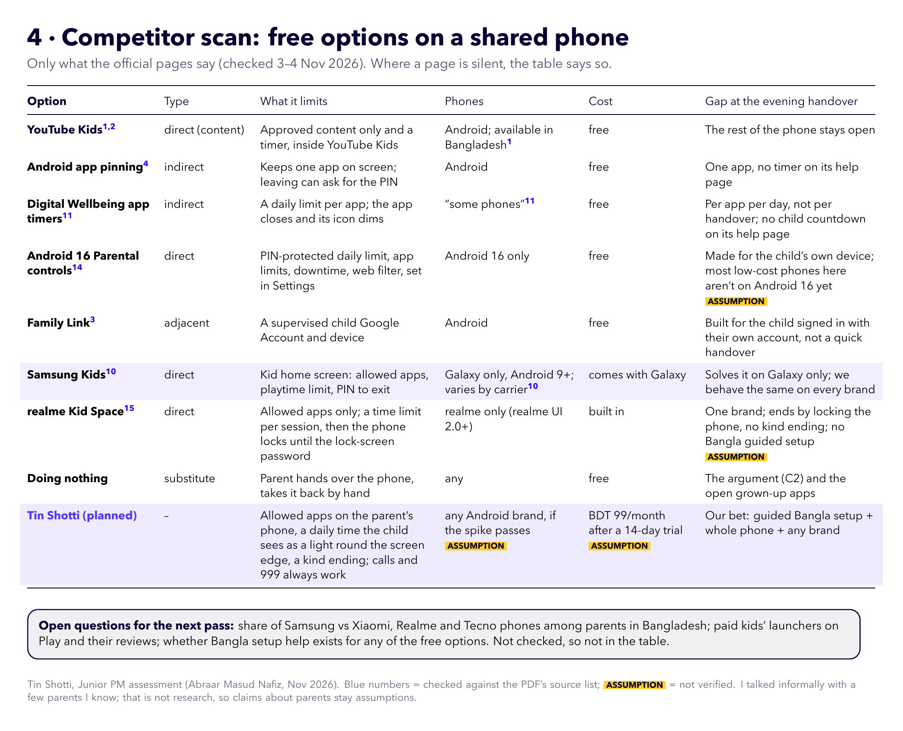

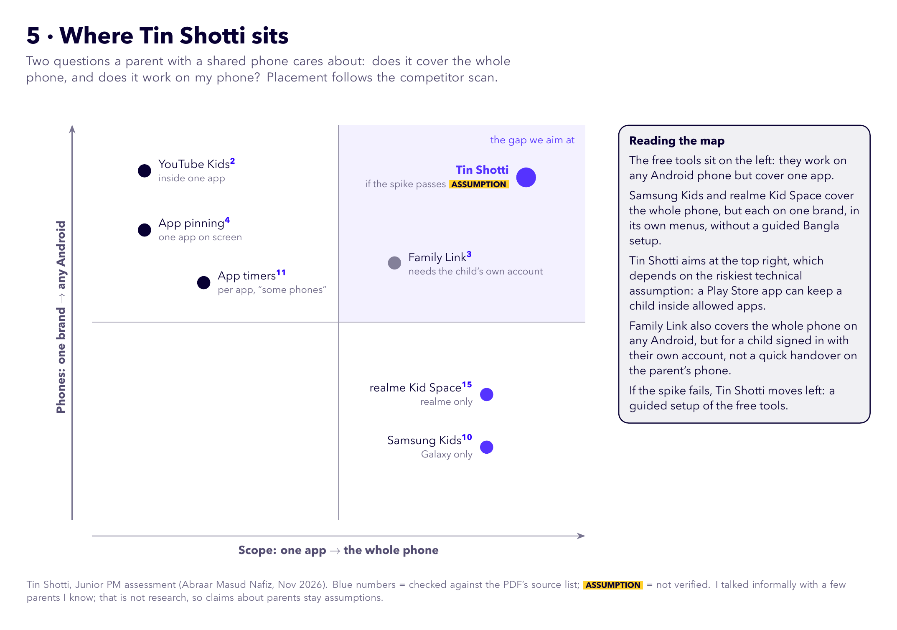

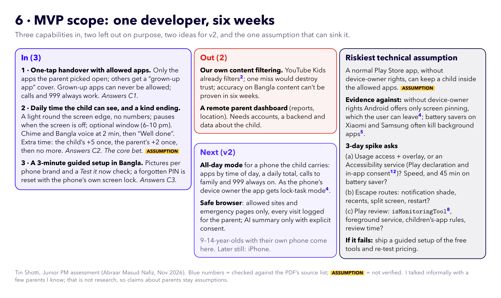

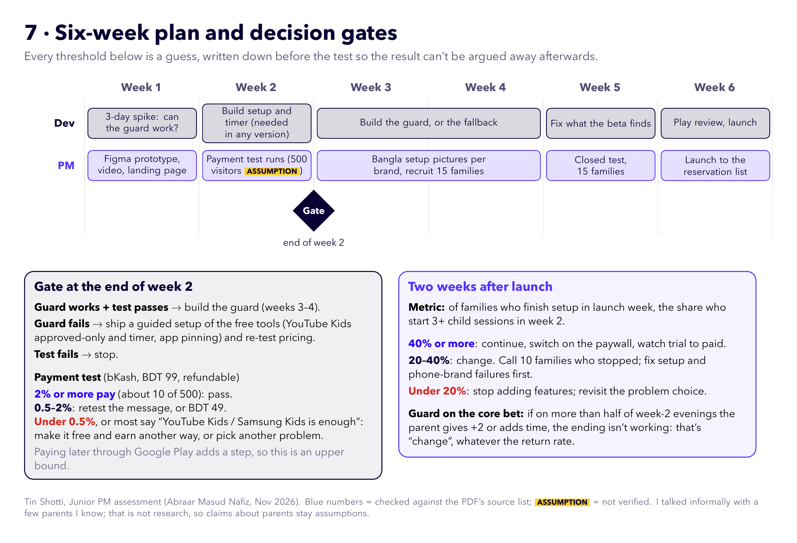

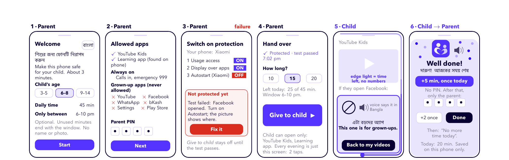

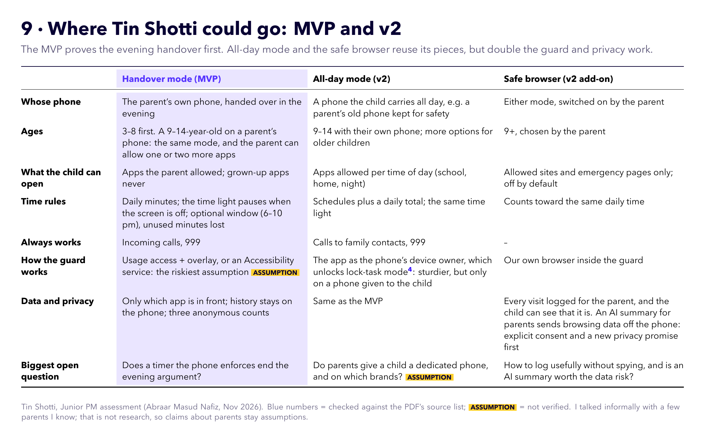
## app design

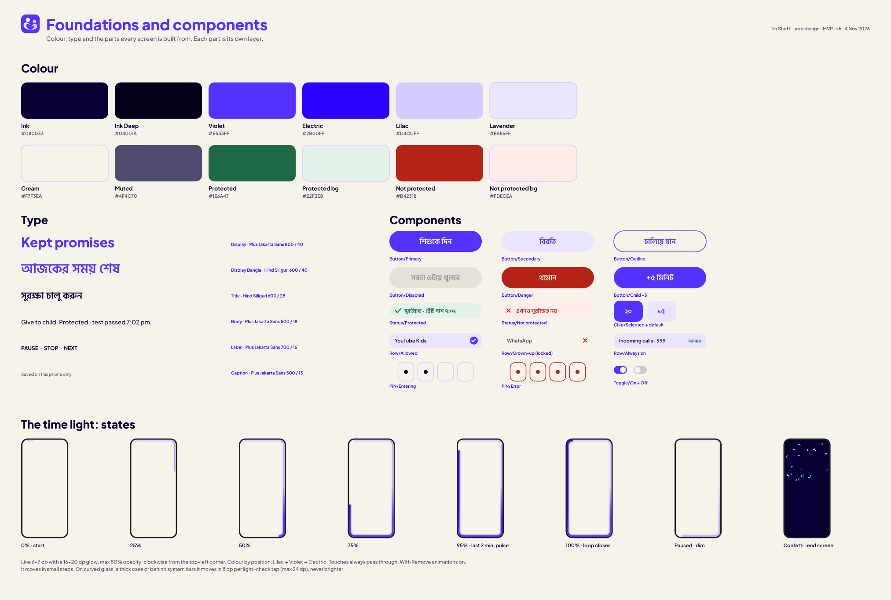

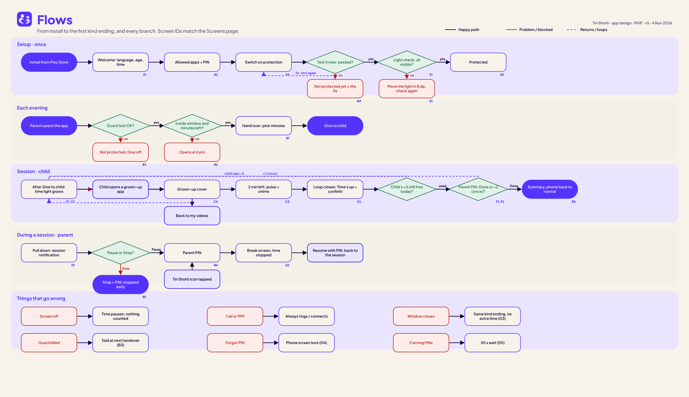

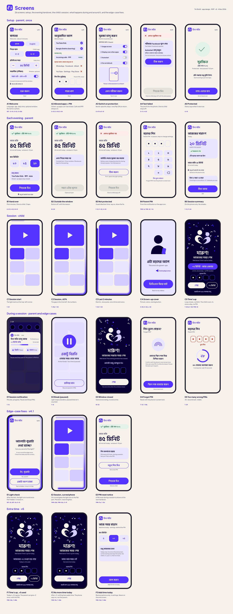

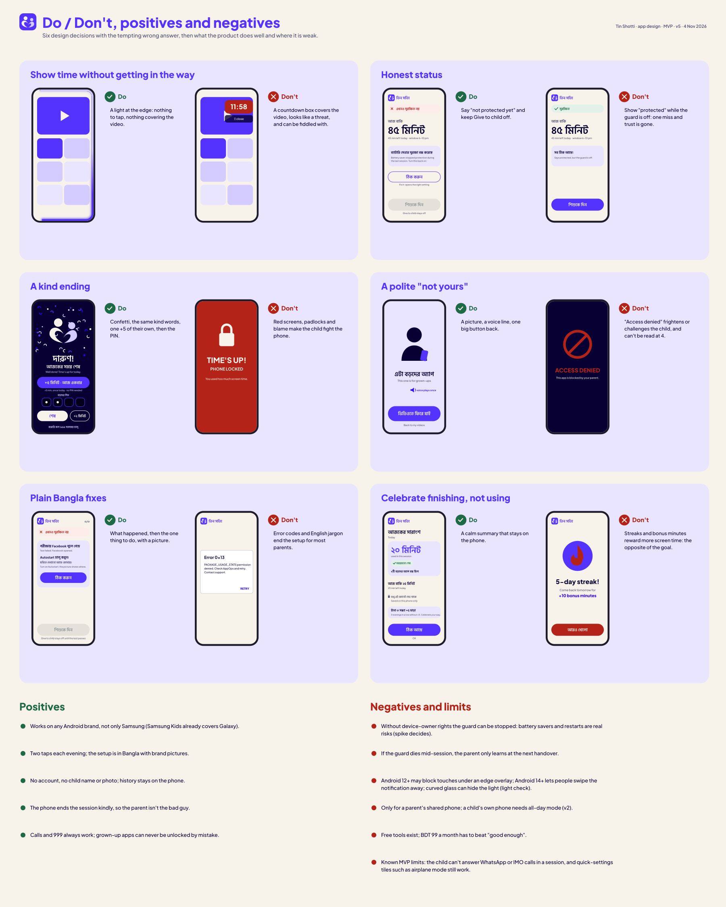

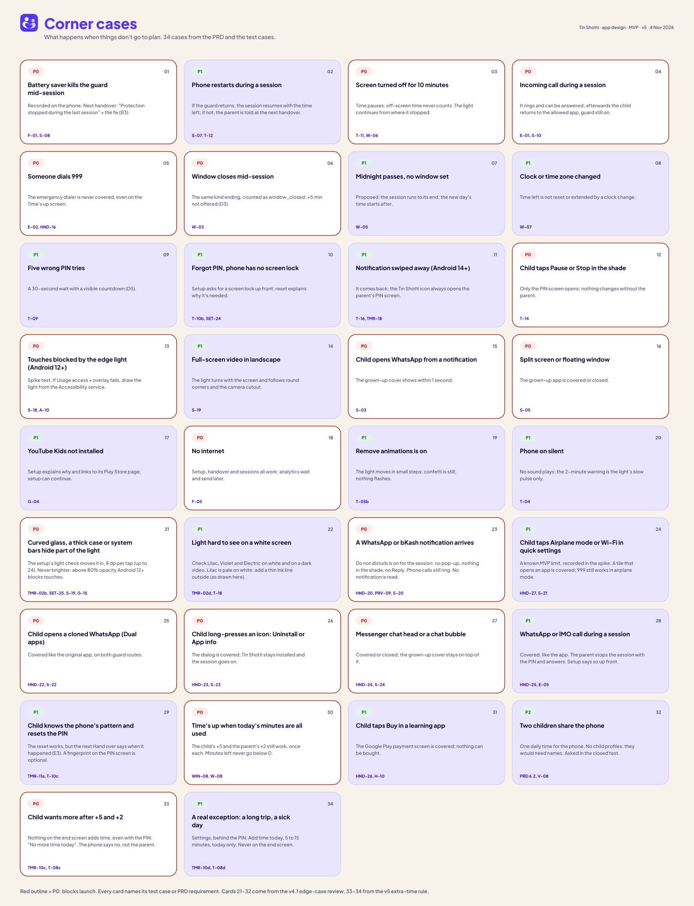
## brand


## documents
- > How I built the answer (Markdown)
- > Product requirements document, v1.4 (Markdown)
- > Acceptance test cases (Markdown) · CSV
- > Brand guidelines (Markdown)
- > UI/UX principles (Markdown)
— Abraar Masud Nafiz · portfolio